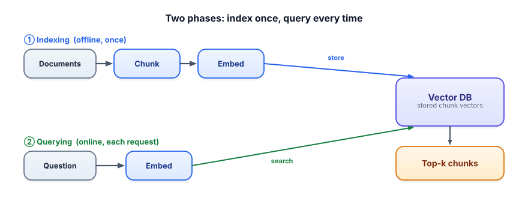

Embeddings for retrieval
You already understand embeddings (Track 1.3). Here you put them to work as the search engine of RAG — turning every chunk into a point in meaning-space once, then finding the nearest points to each question in milliseconds.
Retrieval is embedding similarity at scale
The core of RAG retrieval is exactly the cosine similarity you met in Track 1: embed the chunks, embed the query, find the chunks whose vectors point most like the query’s. The only new ideas are operational: you embed all your chunks once ahead of time (indexing), and at query time you embed just the question and search. Splitting work this way is what makes retrieval fast.

An embedding model maps text to a vector so that similar meanings get similar directions. In retrieval you use it twice: to embed every chunk at index time, and to embed the query at query time. A hard rule: you must use the same embedding model for both — vectors from different models live in different, incomparable spaces. Most retrieval also normalizes vectors to length 1, which makes the fast dot product equal to cosine similarity.
Embedding is like giving every sentence a spot on a giant map where sentences about the same thing live in the same neighbourhood. "Cancel my plan" and "stop paying" end up on the same street even though they share no words. Searching is dropping a pin for the question and looking at the nearest houses. The analogy breaks because every embedding model draws its own map: an address from one map means nothing on another, which is why documents and queries must use the same model.
Embedding your documents with one model and your queries with another (or changing the model after indexing without re-embedding) silently destroys retrieval — the vectors aren’t comparable, so “nearest” is meaningless. Same model for docs and queries, and re-embed everything if you switch models.
Choosing an embedding model
There are many free, open-source embedding models. They differ along axes that actually matter for your system:
| Consideration | What to know |
|---|---|
| Quality vs. size/speed | Bigger models retrieve better but are slower and cost more to run. A small model like all-MiniLM-L6-v2 (384-dim) is a great, free starting point. |
| Max sequence length | Each model truncates input past a limit. Your chunks must fit — a 512-token model silently cuts off longer chunks, losing their tail. |
| Domain match | A model trained on general web text may underperform on legal, medical, or code. Pick (or fine-tune) for your domain when it matters. |
| Multilingual | If users query in multiple languages, use a multilingual model so cross-language matches work. |
| Symmetric vs. asymmetric | Some models (e.g. E5, BGE) expect you to prefix queries and passages differently (like "query: …" / "passage: …"). Follow the model card. |
The retrieval half of RAG, slightly grown from Lesson 3.1: embed many chunks once, then rank by cosine. Normalizing means the dot product is cosine.
import numpy as np
from sentence_transformers import SentenceTransformer
model = SentenceTransformer("all-MiniLM-L6-v2")
chunks = [
"Returns are free within 30 days of delivery.",
"The X200 has a 3-year limited warranty.",
"To cancel your subscription, open Settings > Billing.",
"The motor is rated at 1200 watts.",
]
# INDEX (once): embed all chunks, normalized so dot product = cosine
index = model.encode(chunks, normalize_embeddings=True) # shape (4, 384)
def search(query, k=2):
q = model.encode([query], normalize_embeddings=True)[0] # SAME model
scores = index @ q # cosine for every chunk
order = np.argsort(scores)[::-1][:k]
return [(chunks[i], round(float(scores[i]), 3)) for i in order]
print(search("how do I stop paying?"))
# -> [("To cancel your subscription...", 0.62), ("Returns are free...", 0.18)]Note the winning chunk shares almost no words with the query (“stop paying” vs “cancel subscription”) — that’s semantic retrieval doing its job. For a few thousand chunks this brute-force search is plenty fast; beyond that you’ll want a real index (next lesson).
Assumptions: 1.8 M chunks, a 16-core CPU box that embeds about 500 chunks per second with all-MiniLM-L6-v2 (measure yours; throughput varies a lot with chunk length and hardware), 20 queries per second at peak.
- Indexing time. 1.8 M / 500 = 3,600 s, about one hour on one box. That is a batch job you can schedule nightly for changed chunks only.
- Storage. MiniLM gives 384 dimensions (model card). 384 x 4 bytes = 1,536 bytes per vector, x 1.8 M = 2.76 GB in float32.
- A bigger model. Suppose a 1,024-dimension model scores better on your golden set. 1,024 x 4 = 4,096 bytes, x 1.8 M = 7.37 GB, and if it embeds at, say, 100 chunks per second, re-indexing takes 1.8 M / 100 = 18,000 s, five hours.
- Quantize to claw it back. Storing int8 instead of float32 cuts each value to 1 byte: 1,024 x 1.8 M = 1.84 GB. Measure recall before and after; the drop is usually small but it is your data that decides.
- Query side. Each query is one short embedding plus a search. At 20 QPS that is trivial next to indexing, which is the whole reason for the index-once, query-cheap split.
- The switch rule. Changing the model means re-embedding all 1.8 M chunks before you flip the query side. Run old and new indexes side by side, compare recall@k, then cut over.
- Retrieval = cosine similarity between query and chunk embeddings, with chunks embedded once at index time.
- Same embedding model for documents and queries — different models produce incomparable vectors.
- Normalize vectors so the fast dot product equals cosine similarity.
- Pick a model on quality vs. speed, max sequence length (chunks must fit!), domain, and language.
- Some models need query/passage prefixes — read the model card.
Retrieval quality suddenly drops after a teammate “upgraded the embedding model” in the query path but didn’t touch the stored document vectors. Why?
You must pick an embedding model for retrieval. What's the most useful reference?
You embed with normalize_embeddings=True and rank with a plain dot product. Why is that correct?
1. In the example, why does “how do I stop paying?” match the cancel-subscription chunk over the warranty chunk, despite sharing no words?
2. Your chunks are ~800 tokens but your embedding model’s max input is 512 tokens. What happens, and how do you fix it?
3. You want to keep storage small but retrieval good. Name two levers and their trade-offs.
▸ Show solutions & reasoning
1. The embedding model places “stop paying” and “cancel your subscription” near each other in meaning-space because they express the same intent — billing cessation — even with no shared words. The warranty chunk is about a different topic, so its vector points elsewhere and scores lower. Semantic match is about direction in meaning-space, not word overlap.
2. The model silently truncates each chunk to 512 tokens, so the last ~300 tokens of every chunk are never embedded — any fact living there becomes unretrievable. Fix by making chunks fit the model’s limit (smaller chunks) or choosing a model with a longer max length. Always check that chunk size ≤ model max length.
3. (a) Smaller embedding dimension (or a smaller model): less storage and faster search, but usually slightly lower retrieval quality. (b) Quantizing the vectors (e.g., store as int8): big storage/speed savings for a small accuracy hit. Both trade a little quality for a lot of footprint — measure with evaluation before committing.
Two things separate people who “use embeddings” from people who get retrieval right. First, asymmetric retrieval: a question (“how do I cancel?”) and a passage (“To end your plan, go to Settings…”) are different kinds of text, and several modern models are trained to embed them with explicit instructions or prefixes (E5’s "query:"/"passage:", BGE’s instruction prompts). Using the wrong prefix — or none — quietly costs you recall. Always read the model card and follow its recipe; a “bad model” is often just a mis-used one.
Second, measure, don’t guess. Intuition about which embedding model is best is unreliable; the leaderboard for your data is your own data. Public benchmarks like MTEB are a starting filter, but the real test is building a small labeled set of (query, relevant-chunk) pairs and measuring recall@k for each candidate model on your corpus (Lesson 3.8). Teams routinely find a tiny free model beats a famous one on their domain. Embedding choice is an empirical decision, not a brand decision — and getting it right is one of the highest-leverage things you can do in RAG.
labs/03_rag_local.pyFree and offline once set up: Ollama with qwen2.5:7b, plus the packages in labs/README.md. From the course folder:
python labs/03_rag_local.pyWhat to look for: The lab embeds every chunk with all-MiniLM-L6-v2 and searches by cosine similarity in both DuckDB (array_cosine_similarity) and FAISS, and the two result lists should match. Look at the printed scores for a paraphrased question that shares no words with the answer: it should still rank first. Then, as an experiment, embed the queries with a different model while keeping the stored vectors: the rankings turn to noise, which is the number-one retrieval bug from this lesson.
▸ Recorded output (our run, 2026-11-03, qwen2.5:7b on a laptop GPU)
out of the top 3. On this tiny corpus dense already wins; hybrid earns its keep on big corpora full of
near-identical codes (SKUs, error ids) that embeddings blur. Never assume: measure hit@k (lab 06).
5) Grounded answers with citations, and a refusal when retrieval is weak
Q: I was charged twice for one order. What happens now?
A: If you were charged twice for one order, the duplicate payment is reversed automatically within 3 business days [pay-01#0]. If it is not reversed after 3 business days, raise a billing ticket with both transaction ids.
citations=['pay-01#0'] all-cited-ids-were-retrieved=True
Q: Can I change my delivery address after the order has shipped?
A: No, you cannot change your delivery address after the order has shipped. According to [ship-03#0], the address can only be changed before the order is packed.
citations=['ship-03#0'] all-cited-ids-were-retrieved=True
Q: Do you deliver to Antarctica by drone?
A: I don't know based on our policies. (refused before calling the LLM: best cosine 0.27 < 0.35)
citations=[] all-cited-ids-were-retrieved=True
Look: every factual sentence carries an id you can check; the off-topic question is refused
cheaply by the retrieval threshold, so the model never gets a chance to make something up.Your numbers will differ a little run to run. Full log: labs/outputs. Source: labs/03_rag_local.py.
Warm-up. Two unit vectors in 3 dimensions: q = (0.6, 0.8, 0) and d = (0.8, 0.6, 0). Compute their cosine similarity, then the cosine for d2 = (0, 0.6, 0.8).
▸ Solution
q . d = 0.6 x 0.8 + 0.8 x 0.6 + 0 = 0.48 + 0.48 = 0.96. Both vectors have length 1 (0.36 + 0.64 = 1), so cosine = 0.96. q . d2 = 0 + 0.8 x 0.6 + 0 = 0.48, so cosine 0.48. d ranks above d2. Real embeddings do the same sum over 384 or more dimensions.
Transfer. Your support bot serves English and Hindi users, but all documents are in English. Hindi questions retrieve garbage. What do you change, and how do you check it worked?
▸ Solution
Switch to a multilingual embedding model trained to map the same meaning in different languages to nearby vectors, and re-embed the whole corpus with it (same model on both sides). Alternatively, translate the query to English before retrieval, which keeps your current index but adds an LLM call and its latency. Check with a golden set that has the same questions in both languages: recall@5 for Hindi queries should approach the English number. Pick the model on that eval, not on its leaderboard rank.
Stretch. You want to swap embedding models on a live system with 1.8 M chunks and zero downtime. Write the rollout plan.
▸ Solution
(1) Build a second index with the new model in the background, chunk by chunk, keyed by the same chunk ids. (2) Dual-write: new and changed chunks go to both indexes until cutover. (3) Offline eval: run the golden set against both and compare recall@k, MRR and latency. (4) Shadow traffic: send a slice of live queries to the new index and log both result lists, compare overlap and judged relevance. (5) Cut over the query path and the index together, behind a flag, so you never query new-model vectors with old-model queries. (6) Keep the old index for a rollback window, then delete it. The rule that ties it together: model id is part of the index identity, stored in metadata, and the query code refuses to search an index built by a different model.
Junior Why must the query and the documents use the same embedding model?
▸ Model answer
Each embedding model learns its own vector space. The numbers in one model's vectors have no relationship to another model's, so comparing a query vector from model A against document vectors from model B gives meaningless similarity scores. Retrieval quality collapses without any error message. So you embed documents and queries with the same model and version, and if you change the model you re-embed the whole corpus. I also store the model name in the index metadata so the code can refuse a mismatch.
Mid How would you pick an embedding model for a domain-specific corpus?
▸ Model answer
I use public leaderboards such as MTEB only as a shortlist. Then I build a golden set from my own data, a few hundred real queries with labelled relevant chunks, and measure recall@k and MRR for three or four candidates. I also check practical limits: max sequence length against my chunk size, dimension and therefore storage, embedding throughput for re-indexing, languages, and whether the model expects query and passage prefixes. A small model that wins on my data beats a famous one that does not.
Senior Vector storage is becoming a big cost line. What levers do you have and how do you choose?
▸ Model answer
Four levers. Smaller dimension: some models support truncating dimensions; storage drops linearly, measure the recall cost. Quantization: float32 to int8 is a 4x cut, binary is 32x, usually with a rescoring step on the top candidates using full-precision vectors. Fewer vectors: dedupe near-identical chunks and stop indexing boilerplate. Index choice: compressed indexes like IVF-PQ trade recall for memory. I choose by fixing a quality bar first, say recall@10 within one point of baseline on the golden set, then take the cheapest combination that holds it, and I recheck after every corpus or model change.
Brute-force cosine over a NumPy array is fine for thousands of chunks. For millions, you need a purpose-built store with a clever index. Next: vector databases & indexes.